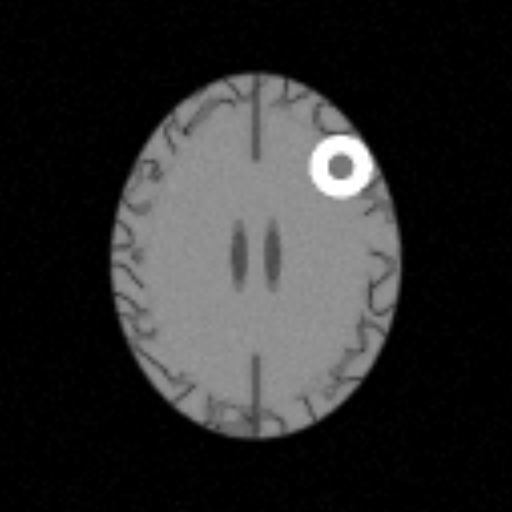
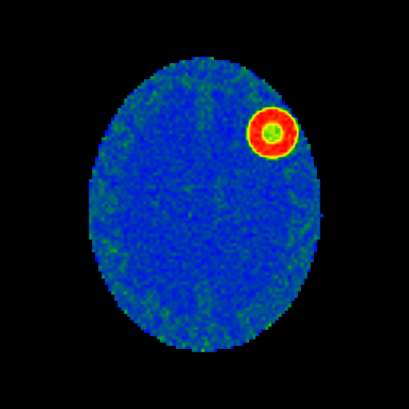

1 · Source
T1 DCE semiquant
Dyn 8 / 12

ROI1 ROI2 ROI3T1 DCE semiquant · Dyn 8/12 · Slice 1/2
t 70.0 s · TR 5.0 ms · TE 2.0 ms
t 70.0 s · TR 5.0 ms · TE 2.0 ms
PHANTOM^SYNTHETIC
NMR-PHANTOM-001 · 2026-01-01
NMR-PHANTOM-001 · 2026-01-01
Window auto a.u.
Subtraction reference Dyn 1
Subtraction reference Dyn 1
Zoom 100 %
2.0 × 2.0 mm · 48 × 48
APRL
2.0 × 2.0 mm · 48 × 48
2 · Live maps

MAXRELENH [%]
Blue-to-Red · Slice 1/2
Blue-to-Red · Slice 1/2
PHANTOM^SYNTHETIC
NMR-PHANTOM-001 · 2026-01-01
NMR-PHANTOM-001 · 2026-01-01
Window 0–229 %
Opacity 100 %
Opacity 100 %
Zoom 100 %
2.0 × 2.0 mm · 48 × 48
APRL
2.0 × 2.0 mm · 48 × 48
3
Region parameters · Slice 1/2
| Parameter | ROI1 | ROI2 | ROI3 | Unit |
|---|---|---|---|---|
| RELENH Dyn 8 | 134.1 | 98.5 | 61.1 | % |
| MAXRELENH | 144.3 | 101.1 | 84.1 | % |
| MAXENH | 434.1 | 201.8 | 211.3 | a.u. |
| S0 | 300.9 | 199.6 | 251.2 | a.u. |
| T0 | 30 | 30 | 40 | s |
| TTP | 60 | 80 | 110 | s |
| WASHIN fit | 11.63 | 3.98 | 2.9 | a.u./s |
| WASHOUT fit | −3.03 | 0.3 | 0.82 | a.u./s |
| BREVENH fit | 45 | 45 | 40 | s |
| AREACURV | 26 894 | 14 061 | 11 978 | a.u.·s |
4
Signal · Slice 1/2